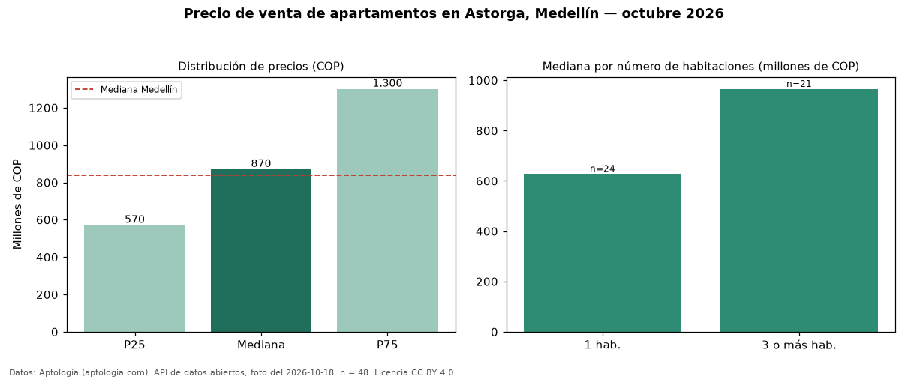

Precio de venta de apartamentos en Astorga, Medellín — octubre 2026
En Astorga, Medellín, la mediana de precio de venta de apartamentos es COP 870 millones, según 48 avisos vigentes. La mediana prácticamente coincide con la de Medellín para apartamentos (COP 840 millones; diferencia de 3,6 %). Con la mediana de arriendo del mismo barrio (COP 7.250.000 al mes), el arriendo anual equivale a 10,0 % del precio de venta: una aproximación gruesa a la rentabilidad bruta, porque compara medianas de ofertas distintas. El segmento con más oferta es el de 1 habitación (24 avisos, mediana COP 627 millones); pasar de 1 habitación a 3 o más habitaciones sube la mediana 54 %. La mitad central de los avisos va de COP 570 millones a COP 1,30 mil millones (razón 2,3), una dispersión alta. Por mediana, es el puesto 32 de 94 barrios de Medellín con al menos 30 avisos de apartamentos en venta: en la franja media. 69 % de los avisos incluye parqueadero, y su mediana (COP 1,14 mil millones) está 31 % por encima de la general. Datos: Aptología (aptologia.com), API de datos abiertos, licencia CC BY 4.0 — https://www.aptologia.com/venta/medellin/astorga. Archivos: PDF de 2 páginas, CSV con las cifras y gráfica PNG.

| Avisos únicos | 48 |
|---|---|
| Percentil 25 | COP 570.250.000 |
| Mediana | COP 870.000.000 |
| Percentil 75 | COP 1.300.000.000 |
Fuente: avisos vigentes de portales inmobiliarios recopilados por Aptología, deduplicados (mínimo 30 avisos únicos por celda). Precios pedidos, no cerrados. Fecha: 2026-10-18.